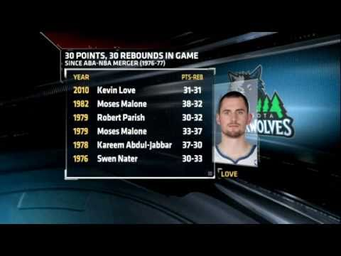
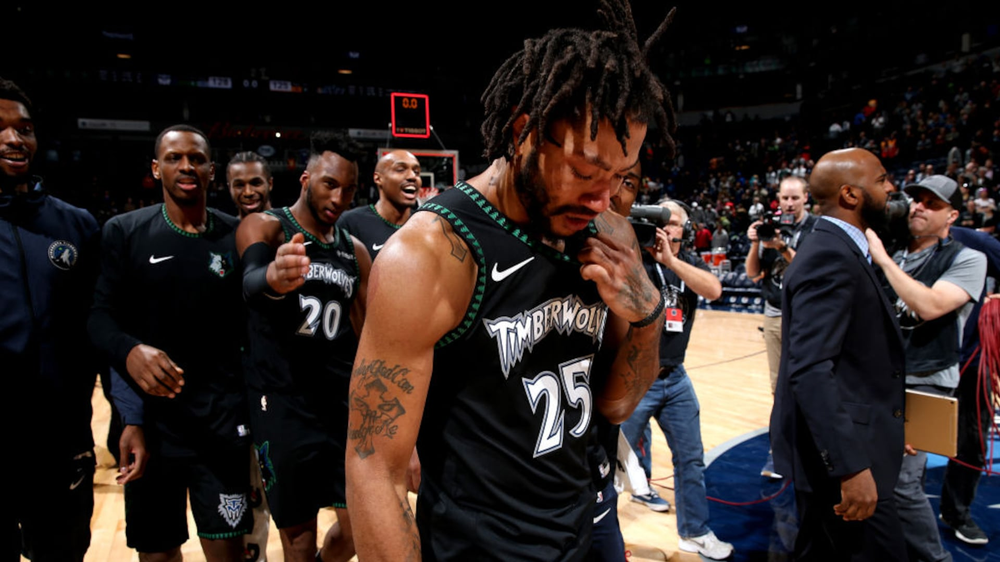
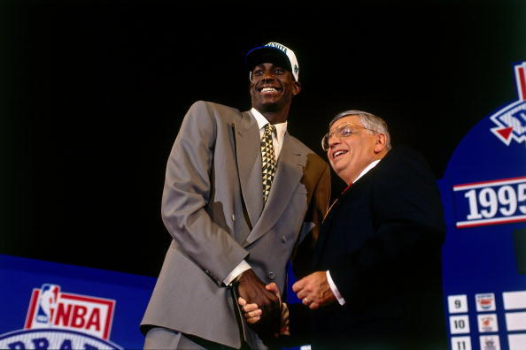
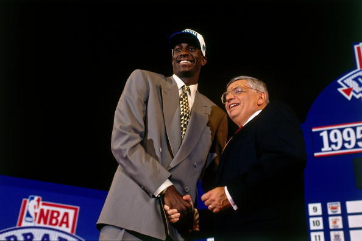

Kevin Love 30-30 (2010)
The statistical highlight of Kevin Love's 2010-2011 season was his "30-30" game, racking up 31 points and a career-high 31 rebounds during a home game against the New York Knicks on November 12. His rebound total was the most since Charles Barkley grabbed 33 in a 1996 game, and his 30-30 achievement was the first seen in the NBA since Moses Malone in 1982. Love became only the 19th player in NBA history to record such a feat, and he made a convincing case for league voters as he was eventually named to his first NBA All-Star Game that season.

Derrick Rose 50pts (2019)
Derrick Rose’s 2018-19 season was a comeback tour for the former MVP. Rose had 24 games with 20 or more points. This came after many thought Rose’s career was over after what could have been multiple career-ending injuries. But Rose kept at it and Oct. 31, 2018 best defined all of it. Rose finished with a career-high 50 points in a win over the Utah Jazz at Target Center. As Rose approached 50 points in the fourth quarter, you could feel the emotion in the building rising, and for good reason. For Rose, this is what he worked so hard for. He could barely hold back the tears as the clock hit zero.

Wolves Draft Garnett(1995)
Ignoring the doubters, Minnesota used the 5th overall pick on Kevin Garnett in the 95' draft. The straight out of high school star became the face of the Wolves for 12 seasons while setting numerous franchise records.


 
